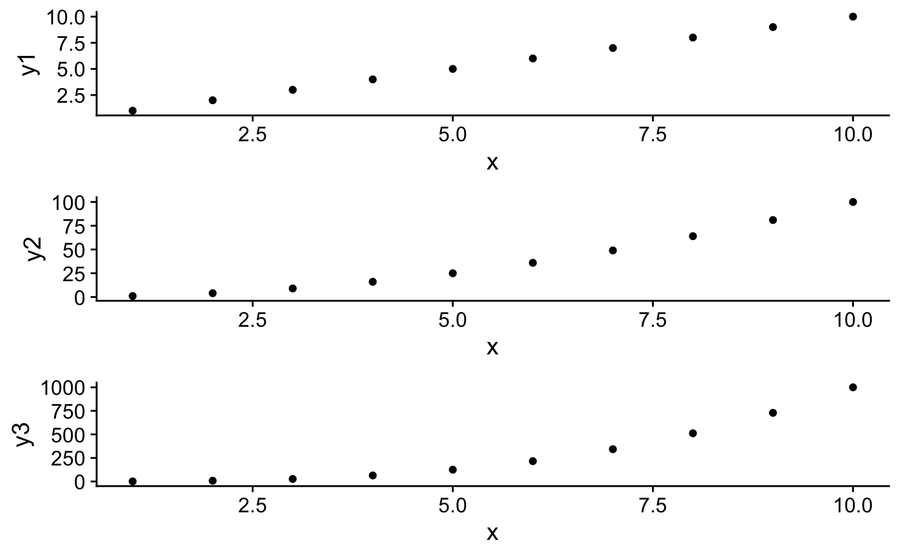

The function aligns the dimensions of multiple plots along a specified axis, and is solely a helper function
for align_plots() to reduce redundancy. Each element of the sizes
list corresponds to the dimensions of a plot being aligned. They should be vectors created from calls to
grob$heights or grob$widths depending on whether you are aligning vertically or horizontally.
The list of dimensions is generated automatically by the align_plots() function, but see examples.
If the same number of elements exist for all plots for the specified
margin, the function will align individual elements on the margin. Otherwise, it aligns the plot by adding
white space to plot margins so that all margins have the same dimensions.
align_margin(sizes, margin_to_align, greedy = TRUE)
| sizes | list of dimensions for each plot being aligned. Each element of list
obtained by a call to |
|---|---|
| margin_to_align | string either "first" or "last" for which part of plot area should be aligned. If vertically aligning, "first" aligns left margin and "last" aligns right margin. If horizontally aligning "first" aligns top margin and "last" aligns bottom margin. |
| greedy | if |
library(ggplot2) # Example for how to utilize, though align_plots() does this internally and automatically df <- data.frame( x = 1:10, y1 = 1:10, y2 = (1:10)^2, y3 = (1:10)^3 ) p1 <- ggplot(df, aes(x, y1)) + geom_point() p2 <- ggplot(df, aes(x, y2)) + geom_point() p3 <- ggplot(df, aes(x, y3)) + geom_point() plots <- list(p1, p2, p3) grobs <- lapply(plots, as_grob) plot_widths <- lapply(grobs, function(x) {x$widths}) # Aligning the left margins of all plots aligned_widths <- align_margin(plot_widths, "first") # Aligning the right margins of all plots as well aligned_widths <- align_margin(aligned_widths, "last") # Setting the dimensions of plots to the aligned dimensions for (i in seq_along(plots)) { grobs[[i]]$widths <- aligned_widths[[i]] } # Draw aligned plots plot_grid(plotlist = grobs, ncol = 1)